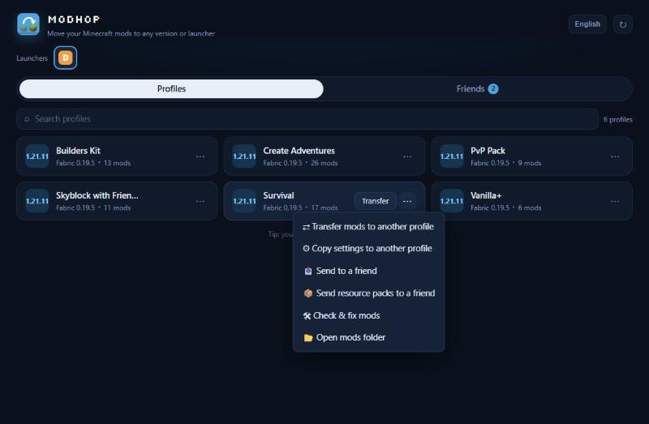

See it in action
All your profiles, one click away


ModHop moves your mods, resource packs and settings between Dawn, Modrinth App, Prism Launcher, MultiMC, CurseForge and the Minecraft Launcher. It finds the right build of every mod for the new Minecraft version and adds the mods they need.
Download for Windows
ModHop works with every Minecraft version and mod loader. It finds the launchers on your PC by itself and reads their profiles, so you can move a profile from one launcher to another.
Pick a profile and a newer version. ModHop downloads the build of each mod made for that version from Modrinth.
Move a profile from Modrinth App to Dawn, from CurseForge to Prism, or the other way, with the same mods.
When a mod needs another mod to run, ModHop adds it. Mods that would crash the game are held back and explained.
Your resource packs, game options, mod configs and server list come along.
Send a profile, or just resource packs, to a friend by Minecraft name. They download it into the launcher they choose.
Downloads come only from Modrinth and are checked. Replaced files are backed up, and updates to ModHop are signed.
ModHop lists the profiles of all your launchers. Right-click the one you want to move.
Choose another version or another launcher, and the mods and resource packs to bring.
ModHop downloads the right files and tells you what changed. Open your launcher and play.
Yes. ModHop is free, with no ads and no account.
Only the profile you choose as the target. Files it replaces are copied to a backup folder first. Profiles a friend sends you always become a new profile.
From Modrinth. ModHop checks every file's hash before it uses it. Mods that are not on Modrinth are listed so you can add them yourself.
ModHop is new and not yet signed with a paid certificate, so Windows and browsers don't recognize it. Choose Keep, or More info → Run anyway.
Yes, in launchers that support them. Dawn profiles use Fabric, so Forge and NeoForge profiles go to launchers like Modrinth App or Prism Launcher.